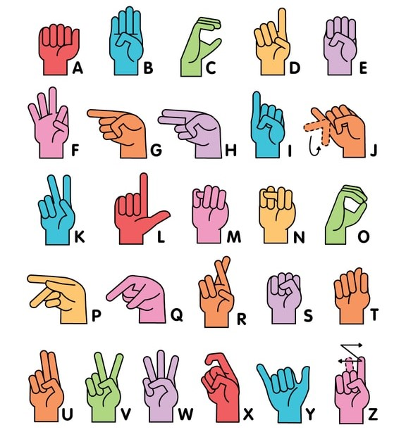
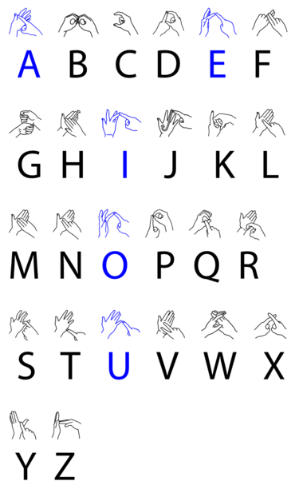
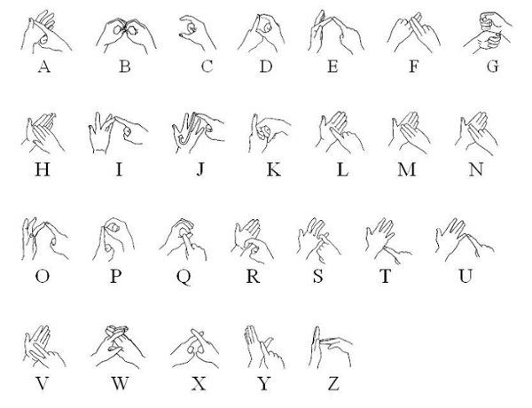
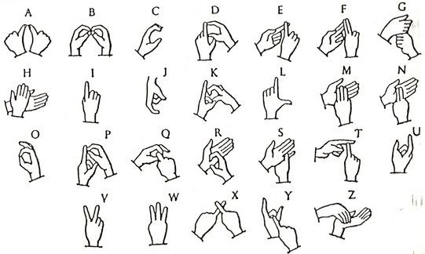

You might be surprised to hear that learning the fundamentals of ASL can be completed in as little as 60 to 90 hours. Comparatively, it can take three to six months to acquire a new spoken language like French.
Types of Sign Language
American Sign Language (ASL)
Although ASL has the same alphabet as English, ASL is not a subset of the English language. American Sign Language was created independently and it has its own linguistic structure. Signs are also not expressed in the same order as words are in English. This is due to the unique grammar and visual nature of the sign language. ASL is used by roughly half a million people in the USA.

British and American sign language dictionaries are an important reference point for the dictionary, but signs used by deaf people in India are very different because of their cultural, geographical and historical context.
Learning sign language is crucial for those who are deaf or hearing impaired, as well as their friends and family members. But, what many people may not realize is that sign language can be a valuable life skill for just about anyone to develop.
To ensure we do not create any distinction which can hamper our ability to communicate. The logic given to promote ISL is since you are Indian so you should do signs only in ISL.
ISL is more similar to American Sign Language and French Sign Language than British Sign Language and is not related to either spoken English or Irish. ISL arose between 1846 and 1849 and is a language of the hands, face, and body that has existed for hundreds of years.
British Sign Language (BSL)
British Sign Language (BSL) is a sign language used in the United Kingdom, and is the first or preferred language among the deaf community in the UK.People who are not deaf may also use BSL, as hearing relatives of deaf people, sign language interpreters or as a result of other contact with the British Deaf community. The language makes use of space and involves movement of the hands, body, face, and head.Unlike ASL, these alphabets use two hands, instead of one.

It is easy to assume that American Sign Language (ASL) and British Sign Language (BSL) would be similar, but they are actually two completely different languages. Only about 30% of the signs are the same, even though they are based on the same spoken language.
British Sign Language (or BSL) is mainly used by the deaf community, but that doesn't mean hearing people can't learn it. It's a beautiful language, and allows people to be expressive. It's a common misconception that BSL is difficult to learn, as it's a non-verbal and purely visual language.
ASL and BSL are Different Languages But the most significant difference between ASL and BSL is the use of a one-handed manual alphabet in ASL and a two-handed manual alphabet in BSL. ASL is so completely different from BSL in terms of the alphabet and numbers.
It actually depends on the person willing to learn the language. However, you should consider which sign language is used the most in the area you live in. If you live in the UK, you should learn BSL, and if you live in the US or in the English-speaking regions of Canada, you should go for ASL.
There is no universal sign language. Different sign languages are used in different countries or regions. For example, British Sign Language (BSL) is a different language from ASL, and Americans who know ASL may not understand BSL.
Australian Sign Language (ASL)
Australian Sign Language (ASL) is also known as Auslan. Auslan is the majority sign language of the Australian Deaf community.Auslan is related to British Sign Language (BSL) and New Zealand Sign Language (NZSL); the three have descended from the same parent language, and together comprise the BANZSL language family. Auslan has also been influenced by Irish Sign Language (ISL) and more recently has borrowed signs from American Sign Language (ASL).
As with other sign languages, Auslan's grammar and vocabulary is quite different from English. Its origin cannot be attributed to any individual; rather, it is a natural language that emerged spontaneously and has changed over time.

Sign language in Australia comes from British Sign Language and Irish Sign Language, which means it's a little different to American Sign Language (ASL for short). The main difference is that Auslan uses a two-handed alphabet, whereas ASL uses only the one hand.
Auslan uses its own unique signs, grammar and expressions. Obviously, learning any new language can take years to master, but it is easier than you think to get started. There are differences between English and Auslan, which may at first be confusing.
The Diploma of Auslan typically requires 2 years full time study and usually provides most learners with some level of Auslan proficiency.
Auslan is short for Australian sign language, a language developed by, and for, Australians who are deaf or hearing impaired. It's a visual form of communication that uses hand, arm and body movements to convey meaning.No, Auslan is uniquely Australian.
The Auslan Alphabet is often called fingerspelling. To express the alphabet in Auslan you use two handed signs to pronounce each letter.
Indo-Pakistani Sign Language (IPSL)
Indo-Pakistani Sign Language (IPSL) is the predominant sign language in the subcontinent of South Asia, used by at least 15 million deaf signers.As of 2021, it is the most used sign language in the world, and Ethnologue ranks it as the 151st most "spoken" language in the world.
Some scholars regard varieties in India, Pakistan, Bangladesh and possibly Nepal as dialects of Indo-Pakistani Sign Language. Others recognize some varieties as separate languages.

Indian Sign Language (ISL) is used in the deaf community all over India. But ISL is not used in deaf schools to teach deaf children. Teacher training programs do not orient teachers towards teaching methods that use ISL. There is no teaching material that incorporates sign language.
It was Sibaji Panda, a deaf teacher, who created and introduced the first-ever formal training course in ISL at the Ali Yavar Jung National Institute of Speech and Hearing Disabilities (AYJNISHD), in 2001.
ISL uses gestures for representing complex words and sentences. It contains 33 hand poses including 10 digits, and 23 letters. Amongst the letters in ISL, the letters 'h', 'j' are represented by gestures and the letter 'v' is similar to digit 2.
Each country has its own Sign Language, just like any other verbal language to communicate. India has Indian Sign Language, it uses both hands to create a Sign (word/expression). Many people think that its just making some random facial expression and throwing hands in the air, which absolutely is not the case.
The parameters are handshape, palm orientation, movement, location, and expression/non-manual signals.